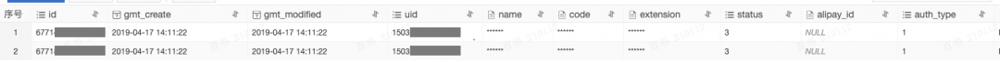
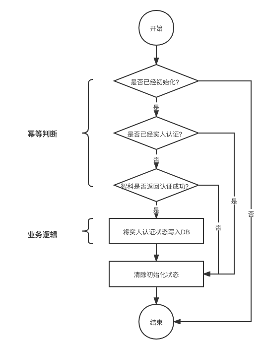
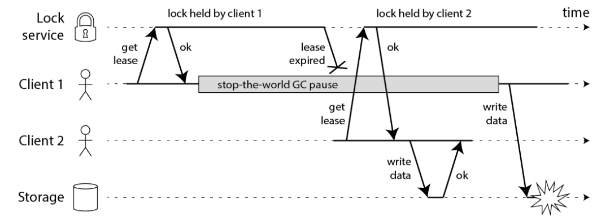

一 摘要
本文从钉钉实人认证场景的一例数据重复问题出发，分析了其原因是因为并发导致幂等失效，引出幂等的概念。
针对并发场景下的幂等问题，提出了一种实现幂等可行的方法论，结合通讯录加人业务场景对数据库幂等问题进行了简单分析，就分布式锁实现幂等方法展开了详细讨论。
分析了锁在分布式场景下存在的问题，包括单点故障、网络超时、错误释放他人锁、提前释放锁以及分布式锁单点故障等，提出了对应的解决方案，介绍了对应方案的具体实现。
二 问题
钉钉实人认证业务存在数据重复的问题。
1 问题现象
正常情况下，数据库中应该只有一条实人认证成功记录，但是实际上某用户有多条。

2 问题原因
并发导致了不幂等。
我们先来回顾一下幂等的概念：
幂等（idempotent、idempotence）是一个数学与计算机学概念，常见于抽象代数中。
在编程中一个幂等操作的特点是其任意多次执行所产生的影响均与一次执行的影响相同。
—来自百度百科
1）用户选择实人认证后会在服务端初始化一条记录；
2）用户在钉钉移动端按照指示完成人脸比对；
3）比对完成后访问服务端修改数据库状态。
在第3步中，在修改数据库状态之前，会判断「是否已经初始化」、「是否已经实人认证」以及「智科是否返回认证成功」以保证幂等。仅当请求首次访问服务端尝试修改数据库状态时，才能满足幂等的判断条件并修改数据库状态。其余任意次请求将直接返回，对数据库状态无影响。请求多次访问服务端所产生的结果，和请求首次访问服务端一致。因此，在实人认证成功的前提下，数据库应当有且仅有一条认证成功的记录。

但是在实际过程中我们发现，同一个请求会多次修改数据库状态，系统并未按照我们预期的那样实现幂等。究其原因，是因为请求并发访问，在首次请求完成修改服务端状态前，并发的其他请求和首次请求都通过了幂等判断，对数据库状态进行了多次修改。
并发导致了原幂等设计失效。
并发导致了不幂等。
三 解决方案
解决并发场景下幂等问题的关键，是找到唯一性约束，执行唯一性检查，相同的数据保存一次，相同的请求操作一次。
一次访问服务端的请求，可能产生以下几种交互：
- 与数据源交互，例如数据库状态变更等；
- 与其他业务系统交互，例如调用下游服务或发送消息等；
一次请求可以只包含一次交互，也可以包含多次交互。例如一次请求可以仅仅修改一次数据库状态，也可以在修改数据库状态后再发送一条数据库状态修改成功的消息。
于是我们可以得出一个结论：并发场景下，如果一个系统依赖的组件幂等，那么该系统在天然幂等。
以数据库为例，如果一个请求对数据造成的影响是新增一条数据，那么唯一索引可以是幂等问题的解法。数据库会帮助我们执行唯一性检查，相同数据不会重复落库。
钉钉通讯录加人就是通过数据库的唯一索引解决了幂等问题。以钉钉通讯录加人为例，在向数据库写数据之前，会先判断数据是否已经存在于数据库之中，如果不存在，加人请求最终会向数据库的员工表插入一条数据。大量相同的并发的通讯录加人请求让系统的幂等设计失效成为可能。在一次加人请求中，（组织ID，工号）可以唯一标记一个请求，在数据库中，也存在（组织ID，工号）的唯一索引。因此我们可以保证，多次相同的加人请求，只会修改一次数据库状态，即添加一条记录。
如果所依赖的组件天然幂等，那么问题就简单了，但是实际情况往往更加复杂。并发场景下，如果系统依赖的组件无法幂等，我们就需要使用额外的手段实现幂等。
一个常用的手段就是使用分布式锁。分布式锁的实现方式有很多，比较常用的是缓存式分布式锁。
四 分布式锁
在What is a Java distributed lock?中有这样几段话：
In computer science, locks are mechanisms in a multithreaded environment to prevent different threads from operating on the same resource. When using locking, a resource is “locked” for access by a specific thread, and can only be accessed by a different thread once the resource has been released. Locks have several benefits: they stop two threads from doing the same work, and they prevent errors and data corruption when two threads try to use the same resource simultaneously.
Distributed locks in Java are locks that can work with not only multiple threads running on the same machine, but also threads running on clients on different machines in a distributed system. The threads on these separate machines must communicate and coordinate to make sure that none of them try to access a resource that has been locked up by another.
这几段话告诉我们，锁的本质是共享资源的互斥访问，分布式锁解决了分布式系统中共享资源的互斥访问的问题。
java.util.concurrent.locks包提供了丰富的锁实现，包括公平锁/非公平锁，阻塞锁/非阻塞锁，读写锁以及可重入锁等。
我们要如何实现一个分布式锁呢？
方案一
分布式系统中常见有两个问题：
1）单点故障问题，即当持有锁的应用发生单点故障时，锁将被长期无效占有；
2）网络超时问题，即当客户端发生网络超时但实际上锁成功时，我们无法再次正确的
获取锁。
要解决问题1，一个简单的方案是引入过期时间（lease time），对锁的持有将是有时效的，当应用发生单点故障时，被其持有的锁可以自动释放。
要解决问题2，一个简单的方案是支持可重入，我们为每个获取锁的客户端都配置一个不会重复的身份标识（通常是UUID），上锁成功后锁将带有该客户端的身份标识。当实际上锁成功而客户端超时重试时，我们可以判断锁已被该客户端持有而返回成功。
综上我们给出了一个lease-based distribute lock方案。出于性能考量，使用缓存作为锁的存储介质，利用MVCC（Multiversion concurrency control）机制解决共享资源互斥访问问题，具体实现可见附录代码。
分布式锁的一般使用方式如下
● 初始化分布式锁的工厂
● 利用工厂生成一个分布式锁实例
● 使用该分布式实例上锁和解锁操作
1 | @Test |
该方案简单易用，但是问题也很明显。例如，释放锁的时候只是简单的将缓存中的key失效，所以存在错误释放他人已持有锁问题。所幸只要锁的租期设置的足够长，该问题出现几率就足够小。
我们借用Martin Kleppmann在文章How to do distributed locking中的一张图说明该问题。

设想一种情况，当占有锁的Client 1在释放锁之前，锁就已经到期了，Client 2将获取锁，此时锁被Client 2持有，但是Client 1可能会错误的将其释放。一个更优秀的方案，我们给每个锁都设置一个身份标识，在释放锁的时候，1）首先查询锁是否是自己的，2）如果是自己的则释放锁。受限于实现方式，步骤1和步骤2不是原子操作，在步骤1和步骤2之间，如果锁到期被其他客户端获取，此时也会错误的释放他人的锁。
方案二
借助Redis的Lua脚本，可以完美的解决存在错误释放他人已持有锁问题的。在Distributed locks with Redis这篇文章的 Correct implementation with a single instance 这一节中，我们可以得到我们想要的答案——如何实现一个分布式锁。
当我们想要获取锁时，我们可以执行如下方法
1 | SET resource_name my_random_value NX PX 30000 |
当我们想要释放锁时，我们可以执行如下的Lua脚本
1 | if redis.call("get",KEYS[1]) == ARGV[1] then |
方案三
在方案一和方案二的讨论过程中，有一个问题被我们反复提及：锁的自动释放。
这是一把双刃剑：
1）一方面它很好的解决了持有锁的客户端单点故障的问题
2）另一方面，如果锁提前释放，就会出现锁的错误持有状态
这个时候，我们可以引入Watch Dog自动续租机制，我们可以参考以下Redisson是如何实现的。
在上锁成功后，Redisson会调用renewExpiration()方法开启一个Watch Dog线程，为锁自动续期。每过1/3时间续一次，成功则继续下一次续期，失败取消续期操作。
我们可以再看看Redisson是如何续期的。renewExpiration()方法的第17行renewExpirationAsync()方法是执行锁续期的关键操作，我们进入到方法内部，可以看到Redisson也是使用Lua脚本进行锁续租的：1）判断锁是否存在；2）如果存在则重置过期时间。
1 | private void renewExpiration() { |
1 | protected RFuture<Boolean> renewExpirationAsync(long threadId) { |
借助Redisson的自动续期机制，我们无需再担心锁的自动释放。但是讨论到这里，我还是不得不面对一个问题：分布式锁本身不是一个分布式应用。当Redis服务器故障无法正常工作时，整个分布式锁也就无法提供服务。
更进一步，我们可以看看Distributed locks with Redis这篇文章中提到的Redlock算法及其实现。
Redlock算法不是银弹，关于它的好与坏，也有很多争论：
1 | How to do distributed locking： |
参考资料
1 | What is a Java distributed lock? |
附录
分布式锁
1 | public class MdbDistributeLock implements DistributeLock { |
分布式锁工厂
1 | public class MdbDistributeLockFactory implements DistributeLockFactory { |

...
...
Copyright 2021 sunfy.top ALL Rights Reserved